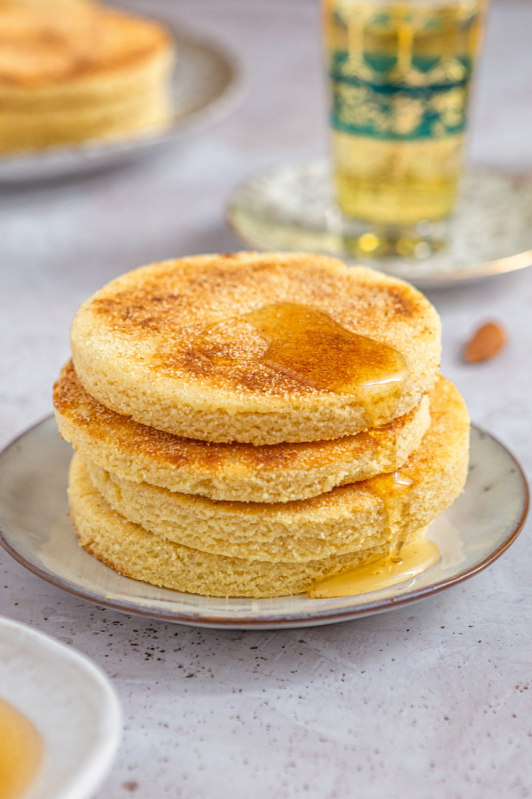
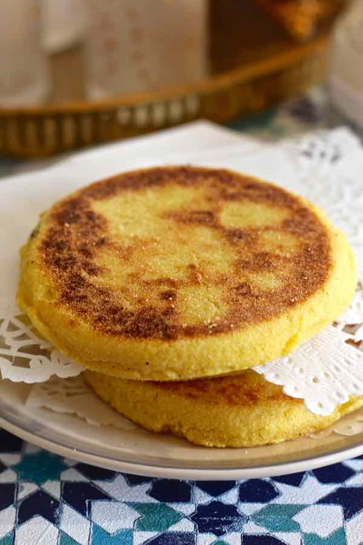
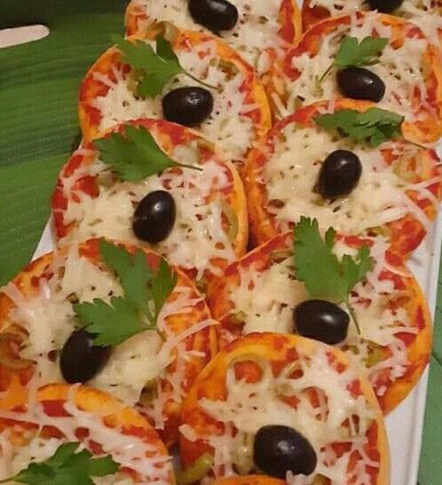

سر السميد الممتاز والوصفة التقليدية
في مخبزة النجوم، نحضر الحرشة يومياً باستخدام سميد القمح الصلب والزبدة الطبيعية. نعتمد على الطريقة الفاسية الأصيلة التي تجعل الحرشة هشة من الداخل ومقرمشة من الخارج.


